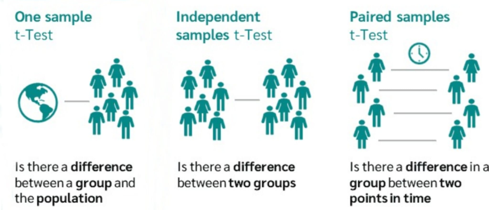
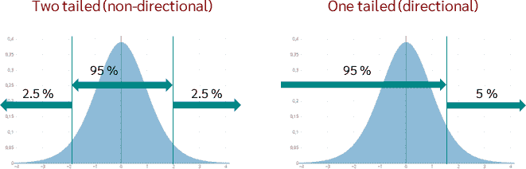
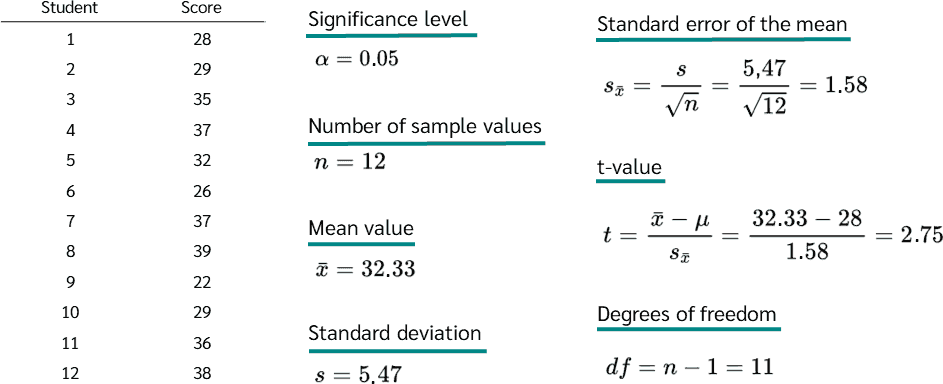
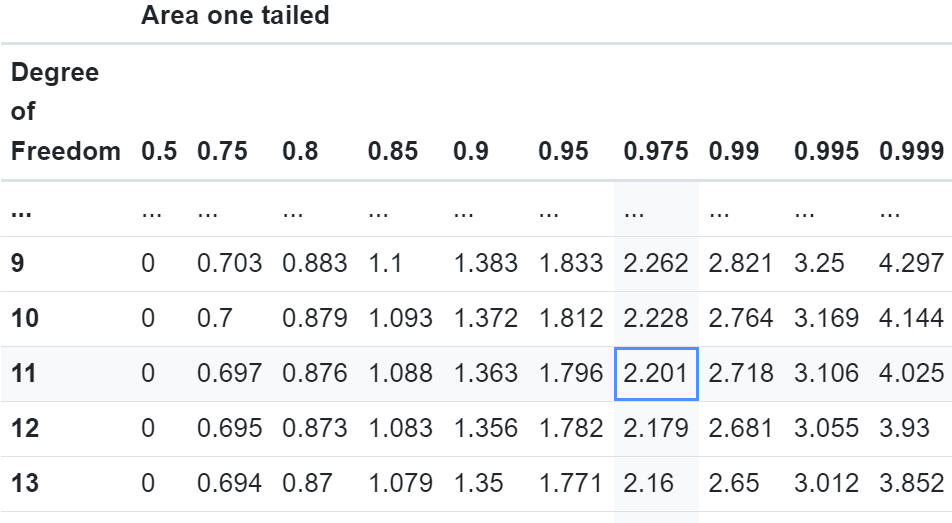
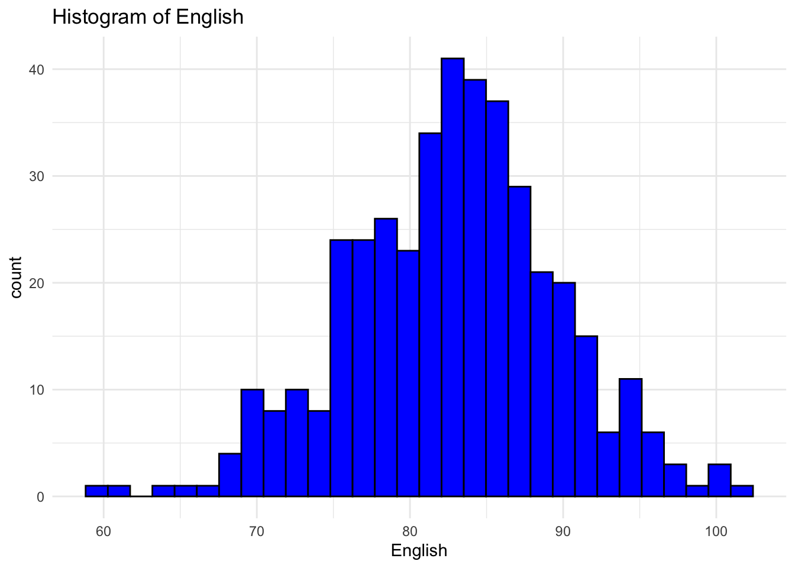
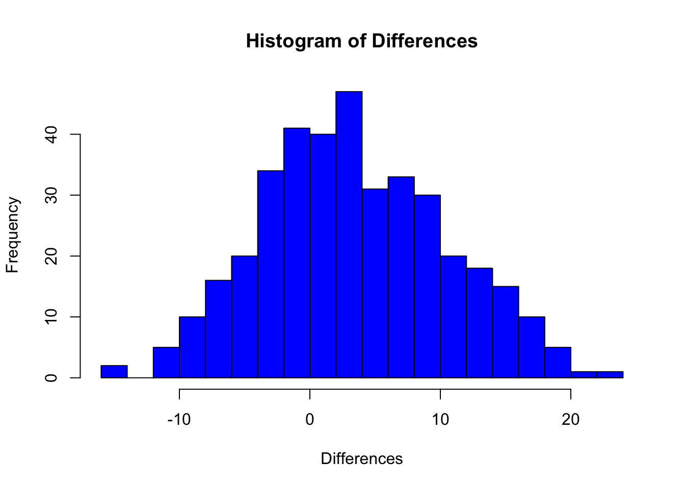

9 One-sample/paired t-test
On this page we will learn about:
- One-sample T-test
- Paired sample T-test
10 Introduction to t-test
A t-test is a statistical tool used to evaluate the means of one or two populations through hypothesis testing.It assesses whether:
- A single group differs from a known value (One-sample t-test).
- There is a significant difference in paired measurements (Paired or dependent samples t-test).
It is important to make a note of that if we have two independent groups that differ from each other, we will use an Independent two-sample t-test explained at xxxxxx

11 One-sample T-test
A one-sample t-test is used to compare if a population mean is significantly different from a specific sample mean. Using this test we can identify if there is a statistically significant difference between the sample mean and a predetermined value. This fixed predetermined value might represent a cut-off point assigned by the statistician or an average from a broader population.
Example: We want to assess the Quality of Life (QOL) among graduate students at FIU and how it might be different from the general population’s QOL. To investigate this, We can survey 50 FIU grad-students using the QOL questionnaire.
11.1 Assumptions for a One-sample T-test
- Random Sampling: The data must come from a random sample.
- Metric Scale of Measurement: The variable should be measured on an interval or ratio scale.
- Normal Distribution: The data should be approximately normally distributed.
To check these assumptions, we can use various visualization techniques:
- Q-Q Plot (Quantile-Quantile Plot): To check the normality of the data.
- Histogram: To observe the shape of the data distribution.
- Boxplot: To check the distribution characteristics and for outliers.
- Residual Plot: To check independence and homogeneity of variances.
11.2 One-tailed and Two-tailed T-tests
One-tailed T-test: Used when the hypothesis predicts a specific direction of the difference (e.g., the sample mean is greater than the population mean).
Two-tailed T-test: Used when the hypothesis does not predict a specific direction, only that there is a difference (e.g., the sample mean is different from the population mean).

11.3 Defining the Question and Hypotheses
Before conducting a one-sample t-test, you need to:
Define the Research Question: Clarify what you are investigating.
Formulate Hypotheses:
Null Hypothesis (H0): There is no difference between the sample mean and the population mean. Alternative Hypothesis (H1): There is a difference (or a specific directional difference).
Example Question for a One-sample T-test: To illustrate, in the case of evaluating managers’ health perceptions:
Question: Does the health perception of managers in Canada significantly differ from the general population’s health perception?
This question sets the stage for determining the appropriate hypotheses and whether to use a one-tailed or two-tailed t-test.
11.4 Statistical background
To determine if the sample mean significantly differs from the population mean, follow these steps: 1. Calculate the test statistic 𝑡using the formula: 
2. Calculate Degrees of Freedom (df): Degrees of freedom are determined by subtracting one from the number of samples (df = n - 1).
3. Estimate Standard Deviation: Use the sample to estimate the population standard deviation.
4. Determine Critical T-value: With the degrees of freedom known, refer to a t-distribution table to find the critical t-value. For example, with 12 samples (df = 11) and a 5% significance level:
One-tailed test: Read the t-value at 0.95. Two-tailed test: Read the t-value at 0.975.

For a two-tailed test at a 5% significance level, the critical t-value is 2.201.
5. Compare Calculated T-value to Critical T-value: If the calculated t-value is less than the critical t-value, the difference is not significant. If the calculated t-value exceeds the critical t-value, the difference is significant.
This process allows you to decide if there is a statistically significant difference between the sample mean and the population mean.
11.5 Data source and description
We’ll use the sample dataset to demonstrate one-sample t-test.
# Load the dataset
sample <- read_excel("../data/02_Sample_Dataset_2014.xlsx")11.6 Code to run One-sample
We want to hypothesize that the mean English scores in the sample dataset is significantly different from 80. To determine whether we can make this claim or not, we will use a one-sample t-test. We will use a significance level of 0.05, which represents the percentage of error that we can tolerate.
11.6.1 First, we need to check Normality Assumption
# Check normality for English in sample
# Histogram
ggplot(
sample,
aes(x = English)
) +
geom_histogram(
bins = 30,
fill = "blue",
color = "black"
) +
ggtitle("Histogram of English") +
theme_minimal()Warning: Removed 26 rows containing non-finite outside the scale range
(`stat_bin()`).
Histogram of English Scores:
The histogram shows the distribution of ‘English’ scores. The x-axis represents the ‘English’ scores, while the y-axis represents the frequency of each score range.
From the histogram, the distribution appears to be roughly symmetrical, resembling a bell-shaped curve. This indicates that the scores are approximately normally distributed.
Q-Q Plot of English Scores:
The x-axis represents the theoretical quantiles, while the y-axis represents the sample quantiles.
In the provided Q-Q plot, most of the points lie close to the reference line, indicating that the English scores are approximately normally distributed.
11.6.2 Perform one-sample t-test
# Perform one-sample t-test
one_sample_result <- t.test(
sample$English,
mu = 80
)
# Print the result
print(one_sample_result)
One Sample t-test
data: sample$English
t = 8.2422, df = 408, p-value = 2.334e-15
alternative hypothesis: true mean is not equal to 80
95 percent confidence interval:
82.12271 83.45240
sample estimates:
mean of x
82.78756 Above code is the example of One Sample t-test where mu = 80 is our hypothesized mean. Looking over different parameters:
Hypothesis Null Hypothesis (\(H_{0}\)): The true mean of the English scores is equal to 80.
Alternative Hypothesis (\(H_{1}\)): The true mean of the English scores is not equal to 80
t-value (8.2422): The t-value indicates how many standard deviations the sample mean (82.78756) is away from the hypothesized population mean (80). A t-value of 8.2422 is quite large, suggesting that the sample mean is significantly different from 80.
Degrees of Freedom (df = 408): The degrees of freedom for this test is 408, which corresponds to the sample size minus one (n - 1).
p-value (2.334e-15): The p-value represents the probability of observing a test statistic as extreme as, or more extreme than, the one observed under the null hypothesis. A p-value of 2.334e-15 is extremely small, far below common significance levels such as 0.05 or 0.01. This indicates strong evidence against the null hypothesis.
95% Confidence Interval [82.12271, 83.45240]: This interval provides a range within which we are 95% confident that the true population mean lies. Since 80 is not within this interval, it further supports the conclusion that the true mean is different from 80.
Sample Mean (82.78756): The mean of the sample data is 82.78756, which is higher than the hypothesized mean of 80.
In summary, based on this analysis, we conclude that the true mean ‘English’ score in the sample is significantly different from, and in this case higher than, 80.
Note that:
if you want to test whether the mean English score is less than 80 (one-tailed test), type this:
t.test(
sample$English,
mu = 80,
alternative = "less"
)
One Sample t-test
data: sample$English
t = 8.2422, df = 408, p-value = 1
alternative hypothesis: true mean is less than 80
95 percent confidence interval:
-Inf 83.34512
sample estimates:
mean of x
82.78756 Or, if you want to test whether the mean English score is greater than 80 (one-tailed test), type this:
t.test(
sample$English,
mu = 80,
alternative = "greater"
)
One Sample t-test
data: sample$English
t = 8.2422, df = 408, p-value = 1.167e-15
alternative hypothesis: true mean is greater than 80
95 percent confidence interval:
82.22999 Inf
sample estimates:
mean of x
82.78756 12 Paired t-test
A paired sample T-test is used when population estimates remain unknown and / or there is a need to observed changes over time You need the paired t-test when measuring the same group or sample at two different times. These involve pairs of measurements that result from repeated measures, parallelization, or matching and are often used in longitudinal studies with multiple time points (time series analyses) or Intervention studies with experimental designs (before-after measurements).
Example: Measuring the weight of a group of people at two different times. Each person has a weight measurement at the first and second time points, allowing the calculation of the difference for each individual.
12.1 Assumptions for Paired T-Test
Before performing the paired t-test, check these assumptions.
-
Normally Distributed Differences: The differences between paired values must be normally distributed. Examples:
- The difference in weight of a person at two different times.
- The difference in the number of points after two dice rolls.
-
Interval-scaled Variables: The variables should be measured on an interval scale, allowing for meaningful calculation of differences. Examples:
- Salary of a person (in Euros)
- Educational level of a person
If assumptions 1 and 2 are not met, use the Wilcoxon test, the non-parametric alternative.
- Dependent Groups or Samples: The groups must be dependent, meaning each value in one group is related to a value in the other group. Example: Measuring the weight of the same person before and after a diet.
12.2 Defining the Question and Hypotheses
Before conducting a paired sample t-test, you need to:
- Define the Research Question:
Clarify what you are investigating. The general question is: Is there a statistically significant difference between the mean values of two dependent groups?
Example questions include: a) Does the new drug improve memory performance? b) Does the newly introduced lubricant affect downtime?
- Hypotheses
Formulate Hypotheses,
Null Hypothesis (\(H_{0}\)): The mean values of the two dependent groups are equal.
Alternative Hypothesis (\(H_{1}\)): The mean values of the two dependent groups are different.
12.3 Statistical background
To perform a paired t-test, we follow these steps:
Calculate Differences: Compute the difference for each pair of observations from the two groups. Difference(i) = Value(i-after) - Value(i-before)
Calculate the Mean of Differences (\(d\)): Find the average of these differences
Calculate the Test Statistic (\(t\)): The test statistic𝑡is calculated similar to a one-sample t-test, where the mean difference (d) is compared to zero. The formula for (\(t\)) is:
\[ t := \frac{\bar{d} - 0}{SE_{\bar{d}}}, \]
where (\(SE_{\bar{d}}\)) is the standard error of the mean difference; that is
\[ SE_{\bar{d}} := \frac{s_{\bar{d}}}{\sqrt n}, \] where \(s_{\bar{d}}\) is the standard deviation of the differences, and n is the sample size.
12.3.1 Effect Size for Paired T-test
Effect size is crucial for interpreting the practical significance of the results. For a paired t-test, effect size \(r\) can be calculated using:
\[ r := \frac{t}{\sqrt{t^2 + df}}. \]
Effect Size Interpretation:
r=0.2: Small effect r=0.5: Medium effect r=0.8: Large effect
12.4 We will now demonstrate a Paired sample T-Test
We still use the sample dataset. want to check whether the socres for English and Writing is significant different.
Hypothese: Null hypothesis(\(H_{0}\)):The mean difference between English and Writing scores is zero. \(H_{0}:μ_{D}=0\)
Alternative hypothesis(\(H_{1}\)): The mean difference between English and Writing scores is not zero. \(H_{0}:μ_{D}≠0\)
12.4.1 Check the Normality Assumption
# Calculate the differences
differences <- sample$English - sample$Writing# Visualize the differences using a Q-Q plot and histogram
# Histogram
hist(differences, main="Histogram of Differences", xlab="Differences", col="blue", breaks=20)
Histogram of Differences: The x-axis represents the differences, and the y-axis represents the frequency of each difference range.
The histogram appears to be roughly bell-shaped and symmetrical, centered around zero. This suggests that the differences are approximately normally distributed.
Q-Q Plot of Differences: The x-axis represents the theoretical quantiles of a normal distribution, while the y-axis represents the sample quantiles.
In the Q-Q plot, the points mostly lie along the reference line (45-degree line), indicating that the sample differences follow a normal distribution.
Now we Perform paired sample t-test
# Perform paired sample t-test
paired_sample_result <- t.test(
sample$English,
sample$Writing,
paired = TRUE
)
print(paired_sample_result)
Paired t-test
data: sample$English and sample$Writing
t = 9.4512, df = 378, p-value < 2.2e-16
alternative hypothesis: true mean difference is not equal to 0
95 percent confidence interval:
2.704479 4.125389
sample estimates:
mean difference
3.414934 Above code is the example of paired t-test. Looking over different parameters:
t-statistic (9.4512): The t-statistic indicates how many standard deviations the sample mean difference is away from the hypothesized mean difference (which is 0 under the null hypothesis). A t-statistic of 9.4512 is very large, suggesting a significant difference between the ‘English’ and ‘Writing’ scores.
df = 378: The degrees of freedom for this test is 378, which corresponds to the number of paired observations minus one (n - 1). p-value (< 2.2e-16):
p-value less than 2.2e-16: A p-value less than 2.2e-16 is extremely small, far below common significance levels such as 0.05 or 0.01. This indicates strong evidence against the null hypothesis.
95% Confidence Interval [2.704479, 4.125389]: This interval provides a range within which we are 95% confident that the true mean difference between the
EnglishandWritingscores lies. Since the interval does not include 0, it further supports the conclusion that there is a significant difference between the scores.Sample Estimate (Mean Difference = 3.414934): The mean difference between the
EnglishandWritingscores is 3.414934, meaning that, on average, English scores are higher than Writing scores by approximately 3.41 points.
We conclude that there is a statistically significant difference between English and Writing scores, with English scores being higher on average.